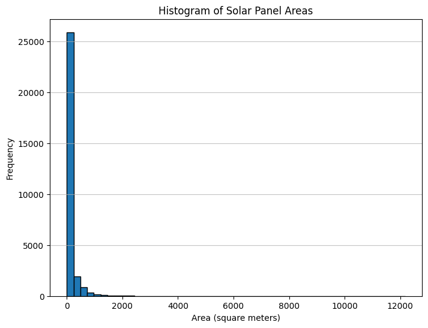
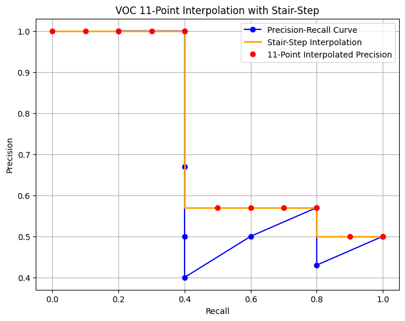
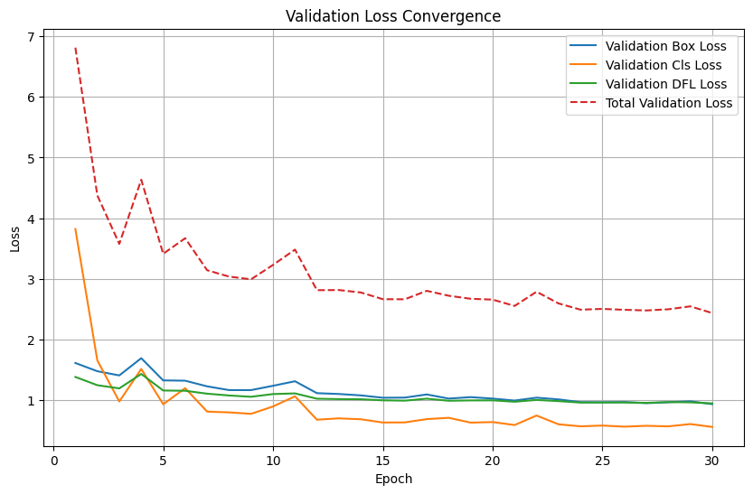
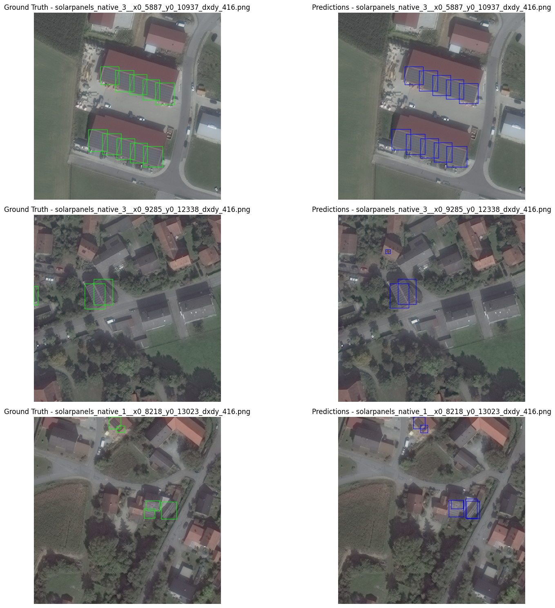
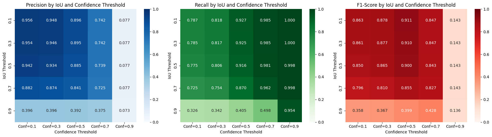

Code
import os
import numpy as np
import matplotlib.pyplot as pltDevansh Lodha
February 26, 2025
Dataset Overview
This solar panel detection dataset features 31 cm resolution aerial imagery with 2,542 meticulously labeled objects. The structure enables both computer vision tasks and precise geospatial analysis through carefully designed components:
Label-Image Relationships
- Each 416×416 pixel image chip (.tif) pairs with a corresponding .txt label file
- Consistent naming convention:
[dataset]_[imagetype]_[tileID]_x[minX]_y[minY]_dxdy[windowSize]
Example pair:
solarpanels_native_1__x0_0_y0_6845_dxdy_416.tif (image) ↔︎
solarpanels_native_1__x0_0_y0_6845_dxdy_416.txt (label)
Annotation Format
Each label file contains rows with:
category x_center y_center x_width y_width
(2542, 2542)We observe and inconsistency between the number of images and the number of labels. Hence we will have to filter out the images which have no labels.
(2542, 2542)We’ll first calculate the total instances of solar panels in the dataset
total_instances = 0
labels_per_image = {}
for filename in os.listdir(labels_path):
if filename.endswith(".txt"):
filepath = os.path.join(labels_path, filename)
with open(filepath, 'r') as f:
lines = f.readlines()
num_instances = len(lines)
total_instances += num_instances
labels_per_image[filename] = num_instances
print(f"Total instances of solar panels in the dataset: {total_instances}")Total instances of solar panels in the dataset: 29625Now we’ll calculate value counts of labels per image
Value counts of labels per image:
81 images have 1 labels.
167 images have 2 labels.
221 images have 3 labels.
218 images have 4 labels.
217 images have 5 labels.
189 images have 6 labels.
170 images have 7 labels.
184 images have 8 labels.
169 images have 9 labels.
121 images have 10 labels.
97 images have 11 labels.
84 images have 12 labels.
69 images have 13 labels.
49 images have 14 labels.
46 images have 15 labels.
41 images have 16 labels.
36 images have 17 labels.
25 images have 18 labels.
29 images have 19 labels.
14 images have 20 labels.
4 images have 21 labels.
1 images have 22 labels.
4 images have 23 labels.
2 images have 24 labels.
4 images have 25 labels.
3 images have 26 labels.
5 images have 27 labels.
5 images have 28 labels.
15 images have 29 labels.
20 images have 30 labels.
8 images have 31 labels.
7 images have 32 labels.
13 images have 33 labels.
19 images have 34 labels.
10 images have 35 labels.
6 images have 36 labels.
17 images have 37 labels.
13 images have 38 labels.
6 images have 39 labels.
9 images have 40 labels.
10 images have 41 labels.
12 images have 42 labels.
11 images have 43 labels.
4 images have 44 labels.
2 images have 45 labels.
5 images have 46 labels.
9 images have 47 labels.
3 images have 48 labels.
5 images have 49 labels.
6 images have 50 labels.
9 images have 51 labels.
16 images have 52 labels.
4 images have 53 labels.
6 images have 54 labels.
1 images have 55 labels.
1 images have 56 labels.
3 images have 58 labels.
2 images have 59 labels.
2 images have 60 labels.
1 images have 61 labels.
6 images have 62 labels.
3 images have 63 labels.
1 images have 64 labels.
3 images have 65 labels.
4 images have 66 labels.
1 images have 67 labels.
1 images have 71 labels.
1 images have 72 labels.
1 images have 73 labels.
5 images have 74 labels.
1 images have 75 labels.
2 images have 76 labels.
2 images have 77 labels.
1 images have 78 labels.# calculate number of classes
classes = set()
for filename in os.listdir(labels_path):
if filename.endswith(".txt"):
filepath = os.path.join(labels_path, filename)
with open(filepath, 'r') as f:
lines = f.readlines()
for line in lines:
classes.add(line.split()[0])
num_classes = len(classes)
print(f"The classes are {classes}.")
print(f"The number of classes is {num_classes}.")The classes are {'1', '0', '2'}.
The number of classes is 3.# count number of instances per class
class_counts = {class_name: 0 for class_name in classes}
for filename in os.listdir(labels_path):
if filename.endswith(".txt"):
filepath = os.path.join(labels_path, filename)
with open(filepath, 'r') as f:
lines = f.readlines()
for line in lines:
class_name = line.split()[0]
class_counts[class_name] += 1
print("\nValue counts of instances per class:")
for class_name, count in class_counts.items():
print(f"{class_name}: {count} instances.")
Value counts of instances per class:
1: 130 instances.
0: 29267 instances.
2: 228 instances.Since the number of classes 1 and 2 are less, we’ll map them to class 0 before training the model.
Geospatial Conversion Process
To calculate solar panel areas, we first convert bounding box coordinates to real-world geographical coordinates using EPSG:32632 (WGS 84/UTM zone 33N).
| Tile | Origin X | Pixel Width | Origin Y | Pixel Height |
|---|---|---|---|---|
| 1 | 307,670.04 | 0.31m | 5,434,427.10 | -0.31m |
| 2 | 312,749.08 | 0.31m | 5,403,952.86 | -0.31m |
| 3 | 312,749.08 | 0.31m | 5,363,320.54 | -0.31m |
All coordinates in meters using EPSG:32633 projection
Chip Coordinates
Convert normalized coordinates to pixel positions:
\[
x_{\text{chip}} = x_{\text{norm}} \times 416
\] \[
y_{\text{chip}} = y_{\text{norm}} \times 416
\]
Tile Coordinates
Calculate absolute positions within tile:
\[
x_{\text{tile}} = x_{\text{min}} + x_{\text{chip}}
\] \[
y_{\text{tile}} = y_{\text{min}} + y_{\text{chip}}
\]
Geographic Coordinates
Transform to real-world coordinates:
\[
X_{\text{geo}} = \text{OriginX} + x_{\text{tile}} \cdot \Delta x + y_{\text{tile}} \cdot \text{skew}_x
\] \[
Y_{\text{geo}} = \text{OriginY} + x_{\text{tile}} \cdot \text{skew}_y + y_{\text{tile}} \cdot \Delta y
\]
Where \(\Delta x = 0.31\)m and \(\Delta y = -0.31\)m
Calculate physical dimensions from pixel measurements:
\[
\text{Width}_{\text{m}} = x_{\text{width}} \times |\Delta x| \\
\text{Height}_{\text{m}} = y_{\text{height}} times |\Delta y| \\
\text{Area}_{\text{m}^2} = \text{Width}_{\text{m}} \times \text{Height}_{\text{m}}
\]
Final metrics computed using:
\[
\mu_{\text{area}} = \frac{1}{n}\sum_{i=1}^{n} \text{Area}_i \\
\sigma_{\text{area}} = \sqrt{\frac{1}{n}\sum_{i=1}^{n}(\text{Area}_i - \mu_{\text{area}})^2}
\]
This pipeline enables precise geospatial positioning and area calculation while maintaining sub-meter accuracy across all dataset tiles.
areas = []
geotransforms = {
1: (307670.04, 0.31, 0.0, 5434427.100000001, 0.0, -0.31),
2: (312749.07999999996, 0.31, 0.0, 5403952.860000001, 0.0, -0.31),
3: (312749.07999999996, 0.31, 0.0, 5363320.540000001, 0.0, -0.31)
}
chip_size = 416
for filename in os.listdir(labels_path):
if filename.endswith(".txt"):
filepath = os.path.join(labels_path, filename)
parts = filename.split('_')
tile_num = int(parts[2])
xmin_chip = int(parts[5])
ymin_chip = int(parts[7])
dxdy = int(parts[9].split('.')[0]) # window size
geotransform = geotransforms[tile_num]
with open(filepath, 'r') as f:
for line in f:
category, x_center_norm, y_center_norm, x_width_norm, y_width_norm = map(float, line.strip().split())
# Normalized to pixel coords in chip (416x416)
x_center_chip = x_center_norm * chip_size
y_center_chip = y_center_norm * chip_size
x_width_chip = x_width_norm * chip_size
y_width_chip = y_width_norm * chip_size
# Chip coords to tile coords
xmin_tile_px = xmin_chip
ymin_tile_px = ymin_chip
x_center_tile = xmin_tile_px + x_center_chip
y_center_tile = ymin_tile_px + y_center_chip
x_width_tile = x_width_chip
y_width_tile = y_width_chip
# Pixel coords to geocoords (EPSG:32633)
x_geo = geotransform[0] + x_center_tile * geotransform[1] + y_center_tile * geotransform[2]
y_geo = geotransform[3] + x_center_tile * geotransform[4] + y_center_tile * geotransform[5]
x_geo_width = x_width_tile * geotransform[1] # width in meters
y_geo_height = y_width_tile * abs(geotransform[5]) # height in meters (geotransform[5] is negative)
area = x_geo_width * y_geo_height
areas.append(area)
print("\nStatistics of the area of solar panels in meters:")
print(f"Mean area: {np.mean(areas):.2f} square meters")
print(f"Standard deviation of area: {np.std(areas):.2f} square meters")
# Histogram of areas
plt.figure(figsize=(8, 6))
plt.hist(areas, bins=50, edgecolor='black')
plt.title('Histogram of Solar Panel Areas')
plt.xlabel('Area (square meters)')
plt.ylabel('Frequency')
plt.grid(axis='y', alpha=0.75)
plt.show()
Statistics of the area of solar panels in meters:
Mean area: 191.52 square meters
Standard deviation of area: 630.70 square meters
The distribution is skewed, indicating that smaller solar panels are more frequent than larger ones.
Intersection over Union (IoU) is a metric that quantifies the degree of overlap between two regions.
We use shapely’s Polygon class to calculate the intersection over union of two bounding boxes. For this first we need a function to convert the bounding box coordinates to a polygon.
def yolo_to_polygon(box_yolo, img_w, img_h):
_, x_center_norm, y_center_norm, width_norm, height_norm = box_yolo
x_center = x_center_norm * img_w
y_center = y_center_norm * img_h
width = width_norm * img_w
height = height_norm * img_h
x_min = x_center - width / 2
y_min = y_center - height / 2
x_max = x_center + width / 2
y_max = y_center + height / 2
return Polygon([(x_min, y_min), (x_max, y_min), (x_max, y_max), (x_min, y_max)])
def iou_shapely(box1_yolo, box2_yolo, image_width, image_height):
_, x_center1_norm, y_center1_norm, width1_norm, height1_norm = box1_yolo
_, x_center2_norm, y_center2_norm, width2_norm, height2_norm = box2_yolo
poly1 = yolo_to_polygon(box1_yolo, image_width, image_height)
poly2 = yolo_to_polygon(box2_yolo, image_width, image_height)
intersection_area = poly1.intersection(poly2).area
union_area = poly1.union(poly2).area
if union_area == 0:
return 0.0
return intersection_area / union_areasv.Detections expects coordinates in xyxy format
def yolo_to_xyxy(box_yolo, img_w, img_h):
try:
_, x_center_norm, y_center_norm, width_norm, height_norm = box_yolo
except ValueError:
x_center_norm, y_center_norm, width_norm, height_norm = box_yolo
x_center = x_center_norm * img_w
y_center = y_center_norm * img_h
width = width_norm * img_w
height = height_norm * img_h
x_min = x_center - width / 2
y_min = y_center - height / 2
x_max = x_center + width / 2
y_max = y_center + height / 2
return np.array([x_min, y_min, x_max, y_max])
def iou_supervision(box1_yolo, box2_yolo, image_width, image_height):
box1_xyxy = yolo_to_xyxy(box1_yolo, image_width, image_height)
box2_xyxy = yolo_to_xyxy(box2_yolo, image_width, image_height)
detections1 = sv.Detections(xyxy=box1_xyxy[np.newaxis, :], confidence=np.array([1.0]), class_id=np.array([0]))
detections2 = sv.Detections(xyxy=box2_xyxy[np.newaxis, :], confidence=np.array([1.0]), class_id=np.array([0]))
iou_matrix = sv.box_iou_batch(detections1.xyxy, detections2.xyxy) # pairwise IoU between boxes
return iou_matrix[0, 0] if iou_matrix.size > 0 else 0.0Comparing the IoU values calculated using Shapely and Supervision on an example set of bounding boxes for an image of size 100.
image_size = 100
box1_yolo = [0, 0.5, 0.5, 0.2, 0.2] # category, x_center_norm, y_center_norm, x_width_norm, y_width_norm
box2_yolo = [0, 0.6, 0.6, 0.2, 0.2]
iou_shapely_val = iou_shapely(box1_yolo, box2_yolo, image_size, image_size)
iou_supervision_val = iou_supervision(box1_yolo, box2_yolo, image_size, image_size)
print(f"\nIoU using shapely: {iou_shapely_val:.4f}")
print(f"IoU using supervision: {iou_supervision_val:.4f}")
IoU using shapely: 0.1429
IoU using supervision: 0.1429The IoU values from shapely and supervision are the same!
Essentially, IoU is a measure of how well the predicted bounding box overlaps with the ground truth bounding box. We set a threshold for the IoU value, and if the IoU value is greater than the threshold, we consider the prediction to be a True Positive. Otherwise, it is a False Positive. We consider all target boxes for which there is no prediction as False Negatives. There is no True Negative in this case.
Precision measures the proportion of predicted positives that are actually correct Mathematically, it’s defined as follows.
\[P = \frac{TP}{TP + FP}\]
Recall measures the proportion of actual positives that were predicted correctly. It is the True Positives out of all Ground Truths. Mathematically, it is defined as follows.
\[R = \frac{TP}{TP + FN}\]
Average Precision (AP) is not the average of Precision (P), it is the area under the precision-recall curve.
We first sort the detections per class by their confidence scores in descending order. We then calculate precision and recall using the cumulative TP and FP values going down the sorted list. We plot these precision (y-axis) and recall (x-axis) values to get the precision-recall curve. The AP is the area under this curve.
The 11 point interpolation method was introduced in the 2007 PASCAL VOC challenge.
AP averages precision at a set of 11 spaced recall points (0, 0.1, 0.2, .. , 1) where we interpolate the corresponding precision for a certain recall value r by taking the maximum precision whose recall value \(\tilde r>r\)
In other words, take the maximum precision point where its corresponding recall value is to the right of \(r\). In this case, precision is interpolated at 11 recall levels, hence the name 11-point interpolated average precision.
This is particularly useful as it reduces the variations in the precision x recall curve. This interpolated precision is referred to as \(p_{interp}(r)\).
\[AP=\frac{1}{11}\sum_{r \in \{0,0.1,0.2,...,1\}}p_{interp}(r)\] where \[p_{interp}(r)=\underset{\tilde r > r} {\text{max }} p(\tilde r)\]
We can construct an example to see this in action. I’ve defined a function voc_interpolation_11point that takes in the precision and recall values and returns the interpolated precision values. The intention in interpolating the precision/recall curve in this way is to reduce the impact of the “wiggles” in the precision/recall curve, caused by small variations in the ranking of examples.
def voc_interpolation_11point(precisions, recalls):
voc_recall_points = np.linspace(0, 1, 11)
interpolated_precisions = []
for r in voc_recall_points:
mask = recalls >= r
if np.any(mask):
interpolated_precisions.append(np.max(precisions[mask]))
else:
interpolated_precisions.append(0.0) # or could be np.nan
return voc_recall_points, np.array(interpolated_precisions)
# Sample Precision-Recall curve data
recalls = np.array([0.2, 0.4, 0.4, 0.4, 0.4, 0.6, 0.8, 0.8, 1.0])
precisions = np.array([1.0, 1.0, 0.67, 0.5, 0.4, 0.5, 0.57, 0.43, 0.5])
# Calculate interpolated precision points
interpolation_points_recall, interpolated_precisions = voc_interpolation_11point(precisions, recalls)
# Plot the Precision-Recall curve and stair-step interpolation
plt.figure(figsize=(8, 6))
# Original Precision-Recall curve
plt.plot(recalls, precisions, marker='o', linestyle='-', color='blue', label='Precision-Recall Curve')
# Stair-step plot for interpolated precision
plt.step(interpolation_points_recall, interpolated_precisions, where='pre', color='orange', label='Stair-Step Interpolation', linewidth=2)
# Interpolated precision points
plt.plot(interpolation_points_recall, interpolated_precisions, 'o', color='red', label='11-Point Interpolated Precision')
# Labels and title
plt.xlabel('Recall')
plt.ylabel('Precision')
plt.title('VOC 11-Point Interpolation with Stair-Step')
plt.legend()
plt.grid(True)
plt.show()
Say \([r_1,...,r_{11}]\) are the 11 recall levels. Then AP which the area under the curve is simply sum of areas of rectangels formed after plotting the stair-step interpolated curve. \[AP = \sum (r_{i}-r_{i-1})p_{interp}(r_{i})\]
This area calculation is more precisely achieved by np.trapezoid which essentialy performs numerical integration.
def average_precision_voc11(precisions, recalls):
voc_recall_points = np.linspace(0, 1, 11)
interpolated_precisions = []
# we do step-wise interpolation
for r in voc_recall_points:
mask = recalls >= r
if np.any(mask):
interpolated_precisions.append(np.max(precisions[mask]))
else:
interpolated_precisions.append(0.0) # or could be np.nan, depending on handling
return np.trapezoid(interpolated_precisions, voc_recall_points)This is similar to VOC 11-point interpolation except we use 101 points and perform linear interpolation.
def average_precision_coco101(precisions, recalls):
coco_recall_points = np.linspace(0, 1, 101)
# we do linear interpolation hence using np.interp works
interpolated_precisions = np.interp(coco_recall_points, recalls, precisions, left=0, right=0)
return np.trapezoid(interpolated_precisions, coco_recall_points)Here we directly use np.trapezoid.
def generate_random_detections(num_images=10, image_size=100, box_size=20):
all_true_boxes = []
all_pred_boxes = []
all_scores = []
for _ in range(num_images):
true_boxes_img = []
pred_boxes_img = []
scores_img = []
for _ in range(10): # 10 boxes per image
# Ground truth box
x_center_gt = random.uniform(0.2, 0.8) # center within image
y_center_gt = random.uniform(0.2, 0.8)
true_box = [0, x_center_gt, y_center_gt, box_size/image_size, box_size/image_size]
true_boxes_img.append(true_box)
# Predicted box (slightly shifted from GT for some overlap)
x_center_pred = x_center_gt + random.uniform(-0.1, 0.1)
y_center_pred = y_center_gt + random.uniform(-0.1, 0.1)
pred_box = [0, max(0.01, min(0.99, x_center_pred)), max(0.01, min(0.99, y_center_pred)), box_size/image_size, box_size/image_size] # clamp to avoid boxes outside image
pred_boxes_img.append(pred_box)
scores_img.append(random.uniform(0.5, 1.0)) # Assign some confidence score
all_true_boxes.append(true_boxes_img)
all_pred_boxes.append(pred_boxes_img)
all_scores.append(scores_img)
return all_true_boxes, all_pred_boxes, all_scoresdef compute_ap_and_pr(true_boxes_list, pred_boxes_list, scores_list, iou_threshold=0.5, image_size=416):
all_predictions = []
total_gt_boxes = sum(len(boxes) for boxes in true_boxes_list)
for img_idx, (true_boxes, pred_boxes, scores) in enumerate(zip(true_boxes_list, pred_boxes_list, scores_list)):
for pred_idx, (pred_box, score) in enumerate(zip(pred_boxes, scores)):
all_predictions.append({
'img_idx': img_idx,
'pred_idx': pred_idx,
'score': score
})
# Sort all predictions by confidence (highest first)
all_predictions.sort(key=lambda x: x['score'], reverse=True)
# Track which GT boxes have been matched
gt_matched = [np.zeros(len(boxes), dtype=bool) for boxes in true_boxes_list]
# Calculate precision and recall
tp = 0
fp = 0
precisions = []
recalls = []
for pred in all_predictions:
img_idx = pred['img_idx']
pred_idx = pred['pred_idx']
# Get prediction and ground truth boxes for this image
true_boxes = true_boxes_list[img_idx]
pred_box = pred_boxes_list[img_idx][pred_idx]
# Find best matching GT box
best_iou = 0
best_gt_idx = -1
for gt_idx, gt_box in enumerate(true_boxes):
if not gt_matched[img_idx][gt_idx]:
# Calculate IoU between prediction and this GT box
iou = iou_supervision(pred_box, gt_box, image_size, image_size)
if iou > best_iou:
best_iou = iou
best_gt_idx = gt_idx
# Check if match is good enough
if best_gt_idx >= 0 and best_iou >= iou_threshold:
tp += 1
gt_matched[img_idx][best_gt_idx] = True # Mark this GT as matched
else:
fp += 1
# Calculate precision and recall at this point
precision = tp / (tp + fp)
recall = tp / total_gt_boxes
precisions.append(precision)
recalls.append(recall)
return np.array(precisions), np.array(recalls)ap_voc11 = average_precision_voc11(precisions, recalls)
ap_coco101 = average_precision_coco101(precisions, recalls)
ap_auc_val = average_precision_auc(precisions, recalls)
print(f"\nAP50 using Pascal VOC 11-point interpolation: {ap_voc11:.4f}")
print(f"AP50 using COCO 101-point interpolation: {ap_coco101:.4f}")
print(f"AP50 using PR-AUC: {ap_auc_val:.4f}")
AP50 using Pascal VOC 11-point interpolation: 0.2238
AP50 using COCO 101-point interpolation: 0.1837
AP50 using PR-AUC: 0.1843def prepare_data(base_path):
orig_images = os.path.join(base_path, "images")
orig_labels = os.path.join(base_path, "labels")
# Create new directories for converted dataset
for split in ["train", "val", "test"]:
os.makedirs(os.path.join(base_path, split, "images"), exist_ok=True)
os.makedirs(os.path.join(base_path, split, "labels"), exist_ok=True)
# Get all label files
label_files = [f for f in os.listdir(orig_labels) if f.endswith(".txt")]
# Shuffle and split
random.seed(42)
random.shuffle(label_files)
total = len(label_files)
train_split = int(0.8 * total)
val_split = int(0.1 * train_split)
# Split files
train_files = label_files[:train_split - val_split]
val_files = label_files[train_split - val_split:train_split]
test_files = label_files[train_split:]
def process_split(files, split_name):
dest_img = os.path.join(base_path, split_name, "images")
dest_lbl = os.path.join(base_path, split_name, "labels")
for lbl_file in files:
# Original paths
tif_path = os.path.join(orig_images, lbl_file.replace(".txt", ".tif"))
txt_path = os.path.join(orig_labels, lbl_file)
# New paths
png_path = os.path.join(dest_img, lbl_file.replace(".txt", ".png"))
new_label_path = os.path.join(dest_lbl, lbl_file)
# Convert image
with Image.open(tif_path) as img:
img.save(png_path, "PNG")
# Map classes 1,2 to 0
with open(txt_path, 'r') as f:
lines = f.readlines()
corrected = []
for line in lines:
parts = line.strip().split()
if parts: # Skip empty lines
# Map classes 1 and 2 to 0
if parts[0] in ['1', '2']:
parts[0] = '0'
corrected.append(' '.join(parts) + '\n')
# Write corrected labels
with open(new_label_path, 'w') as f:
f.writelines(corrected)
# Process all splits
process_split(train_files, "train")
process_split(val_files, "val")
process_split(test_files, "test")
# Print final counts
print(f"Dataset prepared with class mapping:")
print(f"Total samples: {total}")
print(f"Train: {len(train_files)} ({len(train_files)/total:.1%})")
print(f"Validation: {len(val_files)} ({len(val_files)/total:.1%})")
print(f"Test: {len(test_files)} ({len(test_files)/total:.1%})")
print("All classes 1 and 2 have been mapped to 0")
prepare_data("./data")Dataset prepared with class mapping:
Total samples: 2542
Train: 1830 (72.0%)
Validation: 203 (8.0%)
Test: 509 (20.0%)
All classes 1 and 2 have been mapped to 0# Create data directory if it doesn't exist
base_path = os.path.abspath('./data')
# Create YAML content with absolute paths
data_yaml_content = f"""path: {base_path}
train: {os.path.join(base_path, 'train', 'images')}
val: {os.path.join(base_path, 'val', 'images')}
test: {os.path.join(base_path, 'test', 'images')}
nc: 1
names: ['solar_panel']
"""
# Write to data.yaml
with open(os.path.join(base_path, 'data.yaml'), 'w') as f:
f.write(data_yaml_content)
print(f"data.yaml created at:\n{os.path.join(base_path, 'data.yaml')}")
print("\nFile content:")
print(data_yaml_content)data.yaml created at:
/Users/devanshlodha/Documents/IIT Gandhinagar/SRIP/Task/satellite-solar-panel-detection/data/data.yaml
File content:
path: /Users/devanshlodha/Documents/IIT Gandhinagar/SRIP/Task/satellite-solar-panel-detection/data
train: /Users/devanshlodha/Documents/IIT Gandhinagar/SRIP/Task/satellite-solar-panel-detection/data/train/images
val: /Users/devanshlodha/Documents/IIT Gandhinagar/SRIP/Task/satellite-solar-panel-detection/data/val/images
test: /Users/devanshlodha/Documents/IIT Gandhinagar/SRIP/Task/satellite-solar-panel-detection/data/test/images
nc: 1
names: ['solar_panel']
MPS is availabledf = pd.read_csv("models/solarpanel_detector_yolo113/results.csv")
# Calculate total validation loss
df['val/total_loss'] = df['val/box_loss'] + df['val/cls_loss'] + df['val/dfl_loss']
plt.figure(figsize=(10, 6))
plt.plot(df['epoch'], df['val/box_loss'], label='Validation Box Loss')
plt.plot(df['epoch'], df['val/cls_loss'], label='Validation Cls Loss')
plt.plot(df['epoch'], df['val/dfl_loss'], label='Validation DFL Loss')
plt.plot(df['epoch'], df['val/total_loss'], label='Total Validation Loss', linestyle='--')
plt.xlabel('Epoch')
plt.ylabel('Loss')
plt.title('Validation Loss Convergence')
plt.legend()
plt.grid(True)
plt.show()
model = YOLO("models/solarpanel_detector_yolo113/weights/best.pt")
# Get a few random test images
test_images_dir = os.path.join(base_path, "test", "images")
test_image_files = [f for f in os.listdir(test_images_dir) if f.endswith('.png')]
random_test_images = random.sample(test_image_files, 3) # 3 images
# create a figure with subplots
plt.figure(figsize=(18, 5 * len(random_test_images)))
for i, image_file in enumerate(random_test_images):
image_path = os.path.join(test_images_dir, image_file)
image = Image.open(image_path)
img_w, img_h = image.size
# get model predictions
results = model(image)[0]
# get ground truth boxes
label_file = image_file.replace(".png", ".txt")
label_path = os.path.join(base_path, "test", "labels", label_file)
true_boxes = []
try:
with open(label_path, 'r') as f:
for line in f:
parts = line.strip().split()
true_boxes.append([float(x) for x in parts])
true_boxes = np.array(true_boxes)
except FileNotFoundError:
true_boxes = np.empty((0, 5))
# Create detections objects
if len(true_boxes) > 0:
# Convert normalized YOLO boxes to absolute coords
xyxy_boxes = np.array([yolo_to_xyxy(box, img_w, img_h) for box in true_boxes])
detections_gt = sv.Detections(
xyxy=xyxy_boxes,
confidence=np.ones(len(true_boxes)),
class_id=true_boxes[:, 0].astype(int)
)
else:
detections_gt = sv.Detections(
xyxy=np.empty((0, 4)),
confidence=np.array([]),
class_id=np.array([])
)
detections_pred = sv.Detections.from_ultralytics(results)
# Create annotators with smaller line thickness
box_annotator_gt = sv.BoxAnnotator(
color=sv.Color.GREEN,
thickness=1
)
box_annotator_pred = sv.BoxAnnotator(
color=sv.Color.RED,
thickness=1
)
# Ground Truth visualization
annotated_image_gt = box_annotator_gt.annotate(
scene=np.array(image),
detections=detections_gt
)
# Prediction visualization
annotated_image_pred = box_annotator_pred.annotate(
scene=np.array(image),
detections=detections_pred
)
# Plot side by side
plt.subplot(len(random_test_images), 2, i*2 + 1)
plt.imshow(annotated_image_gt)
plt.title(f"Ground Truth - {image_file}")
plt.axis('off')
plt.subplot(len(random_test_images), 2, i*2 + 2)
plt.imshow(annotated_image_pred)
plt.title(f"Predictions - {image_file}")
plt.axis('off')
plt.tight_layout()
plt.show()
0: 416x416 10 solar_panels, 88.8ms
Speed: 0.3ms preprocess, 88.8ms inference, 0.2ms postprocess per image at shape (1, 3, 416, 416)
0: 416x416 3 solar_panels, 78.7ms
Speed: 0.3ms preprocess, 78.7ms inference, 0.2ms postprocess per image at shape (1, 3, 416, 416)
0: 416x416 6 solar_panels, 80.9ms
Speed: 0.3ms preprocess, 80.9ms inference, 0.2ms postprocess per image at shape (1, 3, 416, 416)
Let us first get the predictions for the test set.
# Load the model
model = YOLO("models/solarpanel_detector_yolo113/weights/best.pt")
# Define the base path for the dataset
base_path = "./data" # Adjust this if your data directory is located elsewhere
# Get a list of all image files in the test directory
test_images_dir = os.path.join(base_path, "test", "images")
test_image_files = [
f for f in os.listdir(test_images_dir) if f.endswith((".png"))
]
def load_annotations(image_file, base_path):
label_file = image_file.replace(
os.path.splitext(image_file)[1], ".txt"
)
label_path = os.path.join(base_path, "test", "labels", label_file)
image_path = os.path.join(test_images_dir, image_file)
image = Image.open(image_path)
img_w, img_h = image.size
true_boxes = []
with open(label_path, "r") as f:
for line in f:
true_boxes.append([float(x) for x in line.strip().split()])
true_boxes = np.array(true_boxes)
xyxy_boxes = np.array(
[yolo_to_xyxy(box, img_w, img_h) for box in true_boxes]
)
detections = sv.Detections(
xyxy=xyxy_boxes,
confidence=np.ones(len(true_boxes)),
class_id=true_boxes[:, 0].astype(int),
)
return detections
# Collect predictions and targets for all images
predictions = []
targets = []
for image_file in test_image_files:
image_path = os.path.join(test_images_dir, image_file)
image = Image.open(image_path)
results = model(image, verbose = False)[0]
detections = sv.Detections.from_ultralytics(results)
predictions.append(detections)
# Load corresponding annotations
target_detections = load_annotations(image_file, base_path)
targets.append(target_detections)Now we use our method to calculate the AP50 for the test set.
# Compute mAP50 using our functions
precisions, recalls = compute_ap_and_pr(
true_boxes_list = [t.xyxy for t in targets],
pred_boxes_list = [p.xyxy for p in predictions],
scores_list = [p.confidence for p in predictions],
iou_threshold=0.5,
image_size=416
)
average_precision_auc(precisions, recalls)np.float64(0.9490736432683332)Now testing if we get similar results using the supervision’s compute_average_precision function.
0.9632529279292138Now we make a heatmap of precision, recall and f1-score
iou_thresholds = [0.1, 0.3, 0.5, 0.7, 0.9]
conf_thresholds = [0.1, 0.3, 0.5, 0.7, 0.9]
# Initialize dictionaries to store metrics
precision_table = {}
recall_table = {}
f1_table = {}
for iou_threshold in iou_thresholds:
precision_row = []
recall_row = []
f1_row = []
for conf_threshold in conf_thresholds:
confusion_matrix = sv.ConfusionMatrix.from_detections(
predictions=predictions,
targets=targets,
classes=["solar_panel"],
conf_threshold=conf_threshold,
iou_threshold=iou_threshold
)
# get TP, FP, FN
tp = confusion_matrix.matrix[0][0]
fp = confusion_matrix.matrix[0][1]
fn = confusion_matrix.matrix[1][0]
# Calculate metrics, avoiding division by zero
if tp + fp > 0:
precision = tp / (tp + fp)
else:
precision = 0
if tp + fn > 0:
recall = tp / (tp + fn)
else:
recall = 0
if precision + recall > 0:
f1 = (2 * precision * recall) / (precision + recall)
else:
f1 = 0
precision_row.append(precision)
recall_row.append(recall)
f1_row.append(f1)
# Store rows in the tables
precision_table[iou_threshold] = precision_row
recall_table[iou_threshold] = recall_row
f1_table[iou_threshold] = f1_row
precision_df = pd.DataFrame(precision_table, index=conf_thresholds).T
recall_df = pd.DataFrame(recall_table, index=conf_thresholds).T
f1_df = pd.DataFrame(f1_table, index=conf_thresholds).T
precision_df.columns = [f'Conf={c}' for c in conf_thresholds]
recall_df.columns = [f'Conf={c}' for c in conf_thresholds]
f1_df.columns = [f'Conf={c}' for c in conf_thresholds]
# Display the tables
print("Precision Table (rows=IoU thresholds, columns=Confidence thresholds):")
print(precision_df.round(3))
print("\nRecall Table (rows=IoU thresholds, columns=Confidence thresholds):")
print(recall_df.round(3))
print("\nF1-Score Table (rows=IoU thresholds, columns=Confidence thresholds):")
print(f1_df.round(3))
# Optional: Visualize the tables as heatmaps
plt.figure(figsize=(18, 5))
plt.subplot(1, 3, 1)
sns.heatmap(precision_df, annot=True, cmap='Blues', fmt='.3f', vmin=0, vmax=1)
plt.title('Precision by IoU and Confidence Threshold')
plt.xlabel('Confidence Threshold')
plt.ylabel('IoU Threshold')
plt.subplot(1, 3, 2)
sns.heatmap(recall_df, annot=True, cmap='Greens', fmt='.3f', vmin=0, vmax=1)
plt.title('Recall by IoU and Confidence Threshold')
plt.xlabel('Confidence Threshold')
plt.ylabel('IoU Threshold')
plt.subplot(1, 3, 3)
sns.heatmap(f1_df, annot=True, cmap='Reds', fmt='.3f', vmin=0, vmax=1)
plt.title('F1-Score by IoU and Confidence Threshold')
plt.xlabel('Confidence Threshold')
plt.ylabel('IoU Threshold')
plt.tight_layout()
plt.show()Precision Table (rows=IoU thresholds, columns=Confidence thresholds):
Conf=0.1 Conf=0.3 Conf=0.5 Conf=0.7 Conf=0.9
0.1 0.956 0.948 0.896 0.742 0.077
0.3 0.954 0.946 0.895 0.742 0.077
0.5 0.942 0.934 0.885 0.739 0.077
0.7 0.882 0.874 0.841 0.725 0.077
0.9 0.396 0.396 0.392 0.375 0.073
Recall Table (rows=IoU thresholds, columns=Confidence thresholds):
Conf=0.1 Conf=0.3 Conf=0.5 Conf=0.7 Conf=0.9
0.1 0.787 0.818 0.927 0.985 1.000
0.3 0.785 0.817 0.925 0.985 1.000
0.5 0.775 0.806 0.916 0.981 0.998
0.7 0.725 0.754 0.870 0.962 0.998
0.9 0.326 0.342 0.405 0.498 0.954
F1-Score Table (rows=IoU thresholds, columns=Confidence thresholds):
Conf=0.1 Conf=0.3 Conf=0.5 Conf=0.7 Conf=0.9
0.1 0.863 0.878 0.911 0.847 0.143
0.3 0.861 0.877 0.910 0.847 0.143
0.5 0.850 0.865 0.900 0.843 0.143
0.7 0.796 0.810 0.855 0.827 0.143
0.9 0.358 0.367 0.399 0.428 0.136